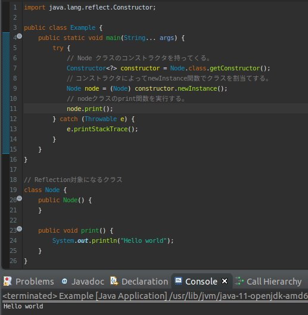
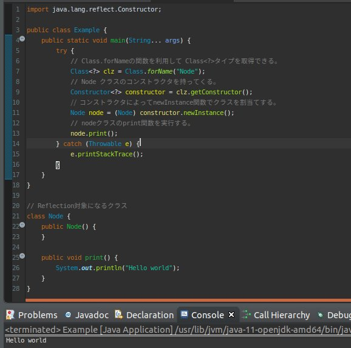
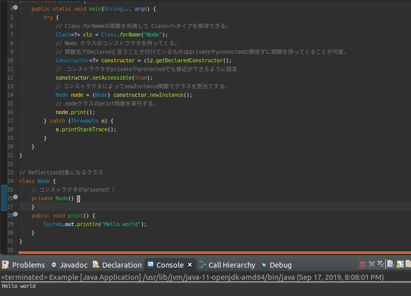

こんにちは。明日です。
このページにはReflection機能の中でクラス(Class)に関して調べてみました。
個人的にプログラムを勉強しながら一番驚いてプログラム実力が急成長した時期がこの「Reflection」概念と勉強した時期ではないかと思いますね。
「Reflection機能」は要約する我々が今まで勉強したプログラム文法を全て無視してプログラム開発ができる方法ではないかと思います。
例えば、クラスのインスタンスを生成する時に必ず「new」を使わなければならないとか「private」のアクセス修飾子は外部で接近ができないかなどを無視して作られます。
つまり、クラスを「new」ではなくてもインスタンス生成する方法があるし、「private」のメンバー変数でもデータを取得、入力ができる意味ですね。
もちろん、できるということで無分別な文法で作ればプログラムはすぐメッチャクチャになりますね。それで個人的な考えは「Reflection」をよく使えるようには「Standard code style」と「Design pattern」を守りながら実装しないとその威力が発揮しないと思います。
「Reflection」は「Java」言語だけではなく、「C#」やスクリプトの「python」、「php」、「Javascript」もあるので比較しながら勉強するのも良いと思います。
それでは「Reflection」の「class」に関して紹介します。
import java.lang.reflect.Constructor;
public class Example {
public static void main(String... args) {
try {
// Node クラスのコンストラクタを持ってくる。
Constructor<?> constructor = Node.class.getConstructor();
// コンストラクタによってnewInstance関数でクラスを割当てする。
Node node = (Node)constructor.newInstance();
// nodeクラスのprint関数を実行する。
node.print();
} catch (Throwable e) {
e.printStackTrace();
}
}
}
// Reflection対象になるクラス
class Node {
public Node() {
}
public void print() {
System.out.println("Hello world");
}
}

結果は「Hello world」が出ました。
またClassのタイプを持つ「newInstance」関数を呼ぶことではなく、「String」タイプの名でも宣言ができます。
import java.lang.reflect.Constructor;
public class Example {
public static void main(String... args) {
try {
// Class.forNameの関数を利用して Class<?>タイプを取得できる。
Class<?> clz = Class.forName("Node");
// Node クラスのコンストラクタを持ってくる。
Constructor<?> constructor = clz.getConstructor();
// コンストラクタによってnewInstance関数でクラスを割当てする。
Node node = (Node) constructor.newInstance();
// nodeクラスのprint関数を実行する。
node.print();
} catch (Throwable e) {
e.printStackTrace();
}
}
}
// Reflection対象になるクラス
class Node {
public Node() {
}
public void print() {
System.out.println("Hello world");
}
}

上の例をみれば、「Class.forName」を利用してクラス名でタイプを持ってきます。今は同じパッケージなのでパッケージ宣言が要らないですが、実はフルネームでしなければならないです。
これからコンストラクタが「private」タイプの場合に呼出す方法に関して調べます。
import java.lang.reflect.Constructor;
public class Example {
public static void main(String... args) {
try {
// Class.forNameの関数を利用して Class<?>タイプを取得できる。
Class<?> clz = Class.forName("Node");
// Node クラスのコンストラクタを持ってくる。
// 関数名でDeclaredと言うことが付けているものはprivateやprotectedの関係ずに関数を持ってくることが可能。
Constructor<?> constructor = clz.getDeclaredConstructor();
// コンストラクタがprivateやprotectedでも接近ができるように設定
constructor.setAccessible(true);
// コンストラクタによってnewInstance関数でクラスを割当てする。
Node node = (Node) constructor.newInstance();
// nodeクラスのprint関数を実行する。
node.print();
} catch (Throwable e) {
e.printStackTrace();
}
}
}
// Reflection対象になるクラス
class Node {
// コンストラクタがprivateだ！
private Node() {
}
public void print() {
System.out.println("Hello world");
}
}

「Reflection」機能で重要なことは「String」形式で外部からクラス名を受け取ってクラスを宣言すること、「private」タイプでもコンストラクタを呼び出せることです。
「String」形式で動けるというのはデザインパタンでインターフリーターと関係があり、privateとは生成パタンと関係がありますね。
link - 作成中 [Design pattern] Interpret pattern
link - 作成中 [Design pattern] Factory method pattern
- [Java] Java servletでインスタンスを初期する方法2019/10/17 07:15:48
- [Java] Spring web frameworkで発生する文字化けのEncoding設定2019/10/16 07:32:55
- [Java] Web Spring frameworkでfilter設定2019/10/15 20:12:35
- [Java] Web serviceのweb.xmlでエラーページ設定2019/10/14 20:13:44
- [Java] JPAのDAOをFactoryパターンで管理する方法2019/10/13 22:55:52
- [Java] JPAのSpring frameworkで依存性注入する方法2019/10/13 00:40:08
- [Java] JPAでDAOを生成する方法2019/10/11 07:30:14
- [Java] JPAでトランザクションの使用方法とオブサーバーパターンで共通トランザクション関数を作り方2019/10/10 07:29:43
- [Java] JPAのQuery を作り方2019/10/09 07:34:08
- [Java] JPAのEntityクラス設定(Cascade, fetch)2019/10/08 07:43:33
- [Java] JPAでpersistance.xml設定とentityクラス設定(@GeneratedValue設定)2019/10/07 07:38:13
- [Java] EclipseでJPAフレームワーク設定する方法2019/10/04 19:24:43
- [Java] Web spring frameworkのJSPで使う言語 JSTL - XML2019/10/03 20:02:06
- [Java] Web spring frameworkのJSPで使う言語 JSTL - 関数、データベース2019/10/02 21:00:22
- [Java] Web spring frameworkのJSPで使う言語 JSTL - コアー、フォーマッティング2019/10/01 21:48:08
- [C#] NSoupライブラリを利用してXMLとHTMLをパーシングする方法2020/04/14 19:34:15
- [C#] 日付フォーマット2020/04/09 20:53:20
- [C#] ログライブラリ(log4net)を設定する方法2020/04/08 13:04:22
- [C#] Zipの圧縮ファイルを解凍するコードを作成する方法2020/04/07 11:17:44
- [C#] Zip圧縮コードを作成する方法2020/04/06 14:56:13
- [C#] 数字フォーマット(お金表示及び小数点以下表示)2020/04/03 00:38:37
- [C#] コマンド(cmd)を実行する方法(Processクラス)2020/03/31 07:15:40
- [C#] FTPに接続してファイルダウンロード、アップロードする方法2020/03/27 19:20:14
- [C#] HttpWebRequestを利用してウェブページを読み込みする方法2020/03/27 00:23:19
- [C#] Base64のエンコード、デコードする方法2020/03/26 02:19:50
- [Java] 日付フォーマット(SimpleDateFormat)を使う方法2020/03/25 00:36:53
- [Java] サーブレット(Servlet)の環境でファイルアップロード(プログレスバーでファイルアップロード状態を表示する方法)する方法2020/03/24 00:48:21
- [Java] Spring環境でファイルアップロード(プログレスバーでファイルアップロード状態を表示する方法)する方法2020/03/22 23:15:12
- [Java] FTPに接続してファイルをダウンロード、アップロードする方法(FTPClient)2020/03/20 02:44:36
- [Window] WindowでFTPサーバを構築する方法2020/03/19 03:27:22